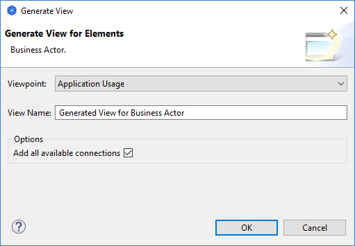

Générer une vue à partir d'éléments
Vous pouvez générer un nouveau diagramme de vue à partir d'élémént(s) Archimate sélectionné(s). Le ou les éléments Archimate sélectionnés obtiennent ensuite le focus de la vue nouvellement générée. Tout élément Archimate qui est lié aux éléments sélectionnés sont également ajoutés à la vue générée ainsi que toutes leurs connexions.
Cette fonctionnalité vous permet de créer rapidement une nouvelle vue et un point de vue spécifiquement pour un ou plusieurs éléments ArchiMate liés.
Pour générer une nouvelle vue à partir d'élément(s) sélectionné(s):
- Assurez-vpis que vous avez sélectionné un ou plusieurs éléments ArchiMate dans l'arborescence des modèles ou dans une vue diagramme.
- Choisissez l'option "Générer une vue pour..." via le menu contextuel obtenu par un clic droit ou à partir du menu principal "Outils".
- Dans la fenêtre de dialogue, choisissez le point de vue cible pour la vue générée. La liste des points de vue disponibles est déterminée par le ou les éléments sélectionnés et selon qu'ils sont autorisés dans un point de vue. Notez également que les éléments qui sont liés aux éléments sélectionnés et qui ne sont pas autorisés dans le point de vue cible ne seront pas inclus dans la vue générée. Si vous voulez inclure tous les éléments reliés dans la vue cible, ou si vous n'êtes pas sûr, choisissez le point de vue "Aucun". Vous pourrez changer le point de vue plus tard si vous le souhaitez.
- Si vous le souhaitez, modifiez le nom de la vue générée.
- Optionnellement, vous pouvez cocher "Ajouter toutes les connexions disponibles". Si cette option est cochée, toutes les connexions entre les éléments sont ajoutées à la vue générée. Si elle est décochée, seules les connexions qui sont directements liées à ou aux éléments sélectionnés seront ajoutées à la vue générée.
- Cliquez sur OK

Dialogue de génération de la vue
Une nouvelle vue sera créée. Elle contiendra le ou les éléments sélectionnés et leurs connexions.